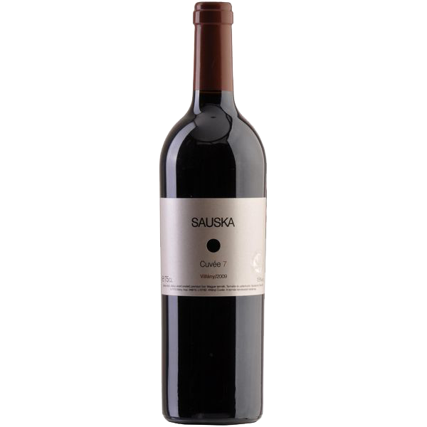
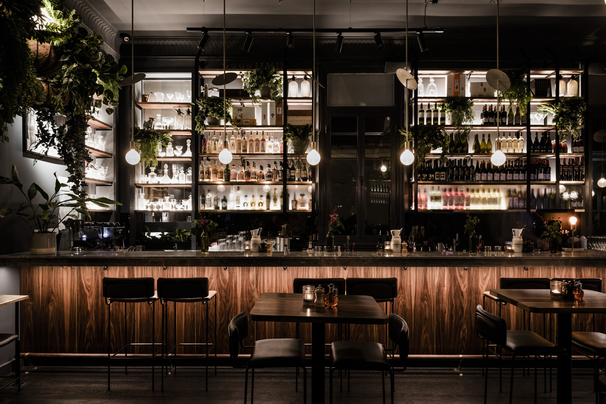
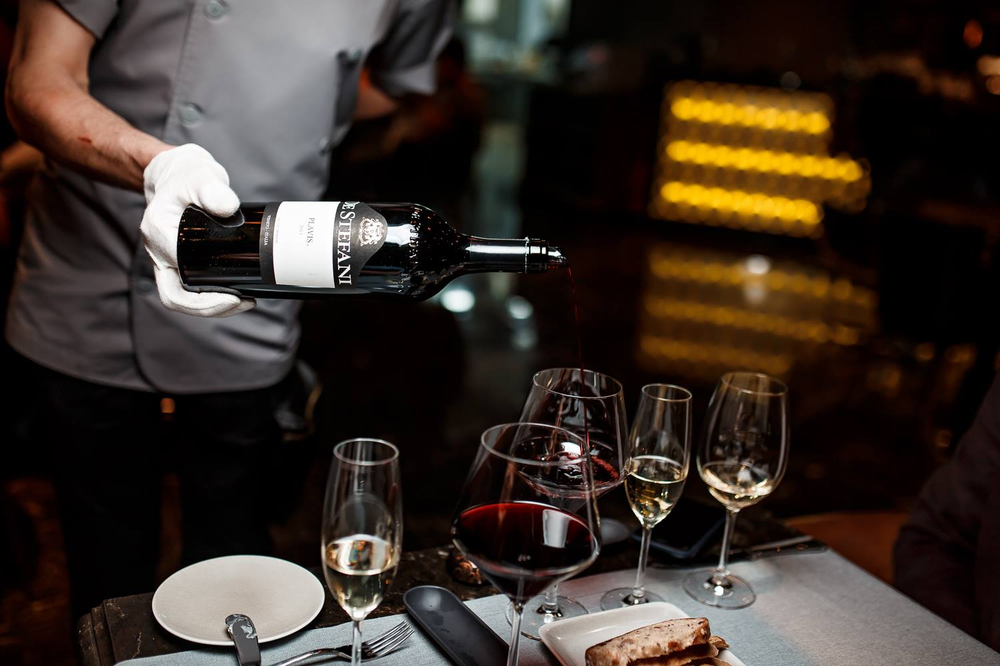

О нас
Винный бар In vino veritas
– это элитное заведение, в которое должен попасть каждый любитель хорошего вина. Бар находится на тихой улочке в стороне от туристических троп, поэтому его очень трудно найти. In vino veritas популярен у горожан со времени открытия в 2009 году. Здесь всегда много народу в любое время года и в любой день недели.
Винный погреб
4.1 балла
0.25л/650р.
0.75л/6500р.
Мерло: 47% Каберне Совиньон: 25% Каберне Фран: 18% Сира: 10%
Вино Sauska, "Cuvee7"



Вино: Красное, сухое Регион: Венгрия, Виллань Производитель: Sauska Год: 2009 Крепость: 15%
Насыщенный тёмно-вишнёвый цвет. Аромат прелой листвы, дыма и вишнёвого корня. Вкус очень мягкий и бархатистый с вареньем из ежевики и горьковатым привкусом. Длинное послевкусие с лавровым листом
Галерея
Интерьер

Длинная барная стойка позволяет с комфортом разместиться за ней большому количеству посетителей. Также в зале есть и классические столики. Лаконичная отделка из натурального дерева и камня создает одновременно респектабельный и непринужденный интерьер.
Дегустация

В первую субботу каждого месяца посетителям предлагается дегустация вин. На ней опытный сомелье расскажет о специфике каждого вина истории их приготовления. Дегустации проходят в специальном зале. Его каменные стены и уютная атмосфера винного погреба как нельзя лучше подходят для наслаждения букетом изысканных напитков.